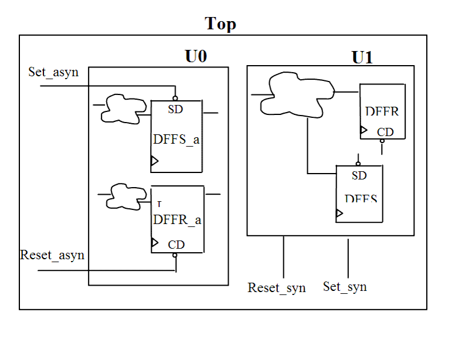

| Description | This rule fires when Leda detects asynchronous parts (flip-flops or latches with asynchronous sets or resets) and synchronous parts (flip-flops or latches with synchronous sets or resets) in the same design module or entity. Placing asynchronous parts in separate modules or entities can prevent metastability problems during timing analysis. |
| Policy | DESIGN |
| Ruleset | PARTITIONING |
| Language | VHDL/Verilog |
| Type | Hardware |
| Severity | Error |
This is an example of valid Verilog code, followed by a circuit diagram that illustrates the correct approach:
module test (Clock, Reset, Din, Dout1, Dout2);
input Clock, Reset, Din;
output Dout1, Dout2;
reg Dout1, Dout2;
sub_asyn U0(.Clock(Clock), .Reset_asyn(Reset_asyn),
.Set_asyn(Set_asyn),. Din(Din), .Dout(Dout1));
sub_syn U1(.Clock(Clock), .Reset_syn(Reset_syn), .Set_syn(Set_syn),
.Din(Din), .Dout(Dout1));
endmodule
module sub_asyn (Clock, Reset_asyn, Set_asyn, Din, Dout);
//asynchronous module
input Clock, Reset_asyn, Set_asyn, Din;
output Dout;
reg Dout;
//asynchronous DFF with Reset/Set
always @(posedge Clock or posedge Reset_asyn)
begin
if (Reset_asyn)
Dout <= 0;
else Dout <= Din;
end
endmodule
module sub_syn (Clock, Reset_syn, Set_syn, Din, Dout);
//synchronous module
input Clock, Reset_syn, Set_syn, Din;
output Dout;
reg Dout;
//synchronous DFF with Reset/Set
always @(posedge Clock )
begin
if (Reset_syn)
Dout <= 0;
else Dout <= Din;
end
endmodule
